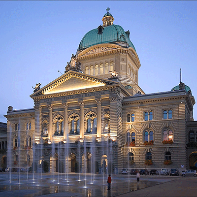
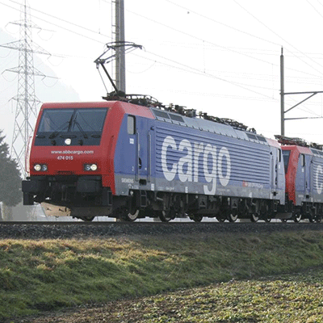

Finanzausgleich (NFA)
NFA heisst nicht nur Bezahlen, sondern auch mehr Eigenständigkeit – diese müssen wir einfordern.
Als grosser Geberkanton darf Schwyz bei der Verteilung der Mittel nicht weiter benachteiligt werden.

Verkehrspolitik
Strasse und Öffentlicher Verkehr dürfen nicht gegeneinander ausgespielt werden – es braucht ein ganzheitliches Verkehrskonzept.
Der Kanton Schwyz darf nicht zum reinen internationalen Gütertransitkorridor verkommen. Der öV und der Berufsverkehr auf der Strasse müssen Vorrang haben.

Wirtschaftsstandort Schwyz
NFA heisst nicht nur Bezahlen, sondern auch mehr Eigenständigkeit – diese müssen wir einfordern.
Als grosser Geberkanton darf Schwyz bei der Verteilung der Mittel nicht weiter benachteiligt werden.